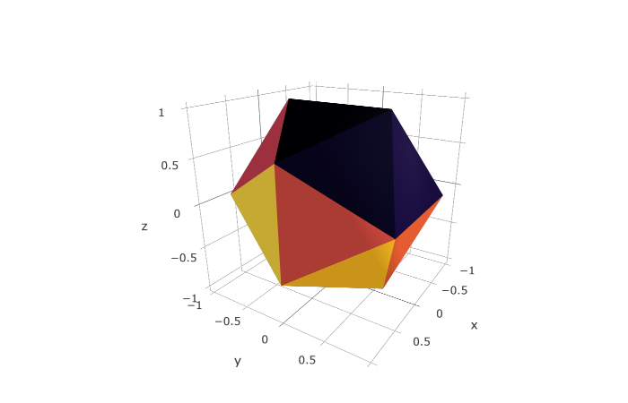
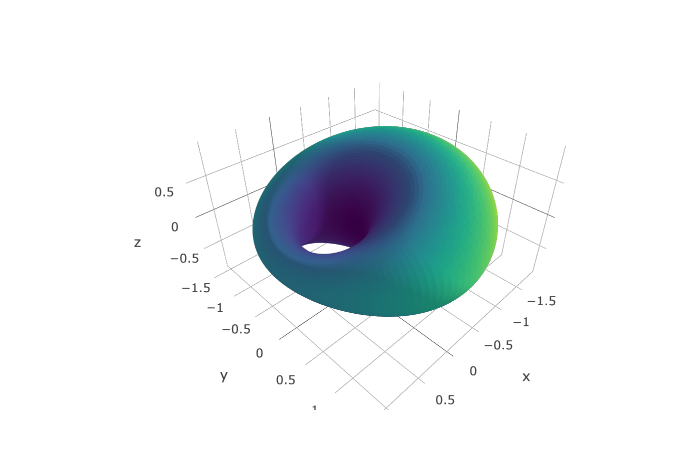
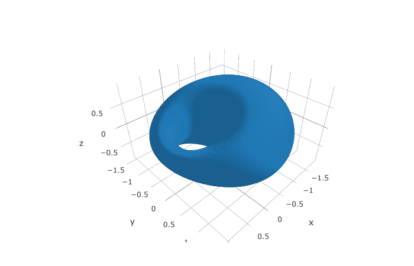

Triangulated surfaces with plotly in R
Posted on August 16, 2018
by Stéphane Laurent
The plotly package for R has a type mesh3d allowing to draw triangulated surfaces. We will give some examples.
From a mesh3d object: icosahedron example
tmesh <- rgl::icosahedron3d()
plot_ly(
x = tmesh$vb[1,], y = tmesh$vb[2,], z = tmesh$vb[3,],
i = tmesh$it[1,]-1, j = tmesh$it[2,]-1, k = tmesh$it[3,]-1,
facecolor = toRGB(viridisLite::inferno(20)),
type = "mesh3d"
) %>% layout(scene = list(aspectmode = "data"))
Drawing a parametric surface : cyclide example
a = 0.94; d = 0.56; c = 0.34; b = sqrt(a^2-c^2)
fx <- function(u,v){
(d*(c-a*cos(u)*cos(v))+b^2*cos(u)) / (a-c*cos(u)*cos(v))
}
fy <- function(u,v){
(b*sin(u)*(a-d*cos(v))) / (a-c*cos(u)*cos(v))
}
fz <- function(u,v){
(b*sin(v)*(c*cos(u)-d)) / (a-c*cos(u)*cos(v))
}
library(misc3d)
tris <- parametric3d(fx, fy, fz,
umin=0, umax=2*pi, vmin=0, vmax=2*pi,
n=100, engine="none")
n <- nrow(tris$v1)
cont <- matrix(NA_real_, ncol=3, nrow=3*n)
cont[3*(1:n)-2,] <- tris$v1
cont[3*(1:n)-1,] <- tris$v2
cont[3*(1:n),] <- tris$v3
idx <- matrix(0:(3*n-1), ncol=3, byrow=TRUE)
plot_ly(
x = cont[,1], y = cont[,2], z = cont[,3],
i = idx[,1], j = idx[,2], k = idx[,3],
type = "mesh3d"
) %>% layout(scene = list(aspectmode = "data"))We can add some colors:
midpoints <- (tris$v1 + tris$v2 + tris$v3)/3
distances <- apply(midpoints, 1, crossprod)
intervals <- cut(distances, 256)
colorsPalette <- viridisLite::viridis(256)
colors <- colorsPalette[as.integer(intervals)]
plot_ly(
x = cont[,1], y = cont[,2], z = cont[,3],
i = idx[,1], j = idx[,2], k = idx[,3],
type = "mesh3d",
facecolor = toRGB(colors)
) %>% layout(scene = list(aspectmode = "data"))
Drawing an isosurface: cyclide again
I like cyclides…
a = 0.94; mu = 0.56; c = 0.34
f <- function(x, y, z, a, c, mu){
b <- sqrt(a^2-c^2)
(x^2+y^2+z^2-mu^2+b^2)^2 - 4*(a*x-c*mu)^2 - 4*b^2*y^2
}
x <- seq(-c-mu-a, abs(mu-c)+a, length=100)
y <- seq(-mu-a, mu+a, length=100)
z <- seq(-mu-c, mu+c, length=50)
g <- expand.grid(x=x, y=y, z=z)
voxel <- array(with(g, f(x,y,z,a,c,mu)), c(100,100,50))
library(misc3d)
cont <- computeContour3d(voxel, level=0, x=x, y=y, z=z)
idx <- matrix(0:(nrow(cont)-1), ncol=3, byrow=TRUE)
plot_ly(
x = cont[,1], y = cont[,2], z = cont[,3],
i = idx[,1], j = idx[,2], k = idx[,3],
type = "mesh3d"
) %>% layout(scene = list(aspectmode = "data"))